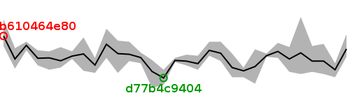

| Revision | Average | Min | Max | Size (bytes) | Benchmarked on | All times |
| bd64a1b794 | 5.16 | 5.09 | 5.30 | 87605 | Wed Aug 8 00:06:52 2012 | All times |
| f62fd06b79 | 4.97 | 4.90 | 5.03 | 87258 | Wed Aug 8 00:44:00 2012 | All times |
| 5fd2fc8e32 | 5.05 | 4.93 | 5.21 | 87258 | Tue Aug 7 22:52:01 2012 | All times |
| b6b26f5afd | 5.05 | 4.95 | 5.19 | 87605 | Tue Aug 7 23:29:32 2012 | All times |
| b52990befb | 5.13 | 4.93 | 5.46 | 87605 | Tue Aug 7 20:45:45 2012 | All times |
| 225b47efbd | 5.07 | 4.95 | 5.18 | 88207 | Tue Aug 7 21:23:02 2012 | All times |
| 3eea24e04a | 5.14 | 5.08 | 5.22 | 88207 | Tue Aug 7 22:00:21 2012 | All times |
| 876615e258 | 5.10 | 5.09 | 5.12 | 88207 | Tue Aug 7 09:45:45 2012 | All times |
| 43955e8062 | 5.00 | 4.84 | 5.16 | 87258 | Tue Aug 7 06:03:41 2012 | All times |
| d7b4d238af | 4.96 | 4.90 | 4.99 | 87860 | Tue Aug 7 03:48:13 2012 | All times |
| 71bb64df71 | 4.99 | 4.90 | 5.12 | 87605 | Tue Aug 7 04:25:39 2012 | All times |
| 9c9e2c6b1d | 5.12 | 5.05 | 5.23 | 88207 | Tue Aug 7 02:24:30 2012 | All times |
| fa7ff84d47 | 5.15 | 5.10 | 5.23 | 87258 | Tue Aug 7 00:30:06 2012 | All times |
| da9d9a6660 | 5.03 | 4.97 | 5.10 | 87258 | Mon Aug 6 17:52:52 2012 | All times |
| 050eba485a | 5.05 | 5.01 | 5.11 | 87860 | Mon Aug 6 07:10:29 2012 | All times |
| 5f8dd93b2a | 5.06 | 5.04 | 5.08 | 88207 | Mon Aug 6 07:48:37 2012 | All times |
| d77b4c9404 | 4.89 | 4.83 | 4.97 | 87258 | Mon Aug 6 02:13:16 2012 | All times |
| 67a79d5510 | 4.95 | 4.80 | 5.06 | 87258 | Mon Aug 6 02:49:48 2012 | All times |
| 6d56f4429e | 5.08 | 5.03 | 5.13 | 88207 | Mon Aug 6 18:29:42 2012 | All times |
| 4c48da17fe | 5.11 | 5.05 | 5.23 | 87860 | Mon Aug 6 01:35:51 2012 | All times |
| e3d59a330e | 5.12 | 4.94 | 5.24 | 87860 | Mon Aug 6 03:26:59 2012 | All times |
| c289daf4db | 5.21 | 5.08 | 5.35 | 87860 | Mon Aug 6 19:06:46 2012 | All times |
| a29fd0668e | 5.01 | 4.94 | 5.08 | 87605 | Mon Aug 6 04:41:17 2012 | All times |
| 07cd608e26 | 5.12 | 4.96 | 5.27 | 88207 | Mon Aug 6 04:03:48 2012 | All times |
| bfdb8242d9 | 5.10 | 5.07 | 5.14 | 87605 | Sat Aug 4 10:50:27 2012 | All times |
| 743d05c89c | 5.05 | 4.99 | 5.18 | 87605 | Sat Aug 4 09:16:40 2012 | All times |
| 7caeaa0b05 | 5.08 | 4.97 | 5.14 | 87605 | Sat Aug 4 01:56:43 2012 | All times |
| 15b9cc32d4 | 5.08 | 5.01 | 5.15 | 87605 | Sat Aug 4 09:53:57 2012 | All times |
| 7464bfd078 | 5.20 | 5.15 | 5.23 | 87605 | Fri Aug 3 01:45:16 2012 | All times |
| b38abd8131 | 5.07 | 4.98 | 5.17 | 87860 | Fri Aug 3 01:09:14 2012 | All times |
| b610464e80 | 5.28 | 5.19 | 5.44 | 87605 | Mon Aug 6 08:27:33 2012 | All times |
Written on Wed Aug 8 17:42:22 2012.